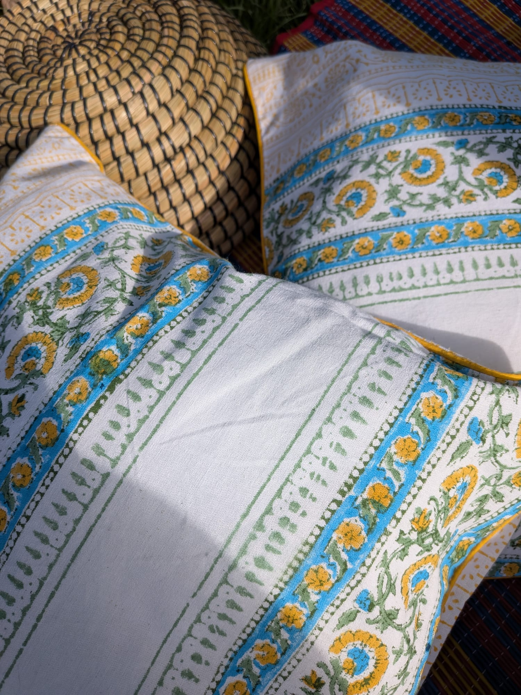
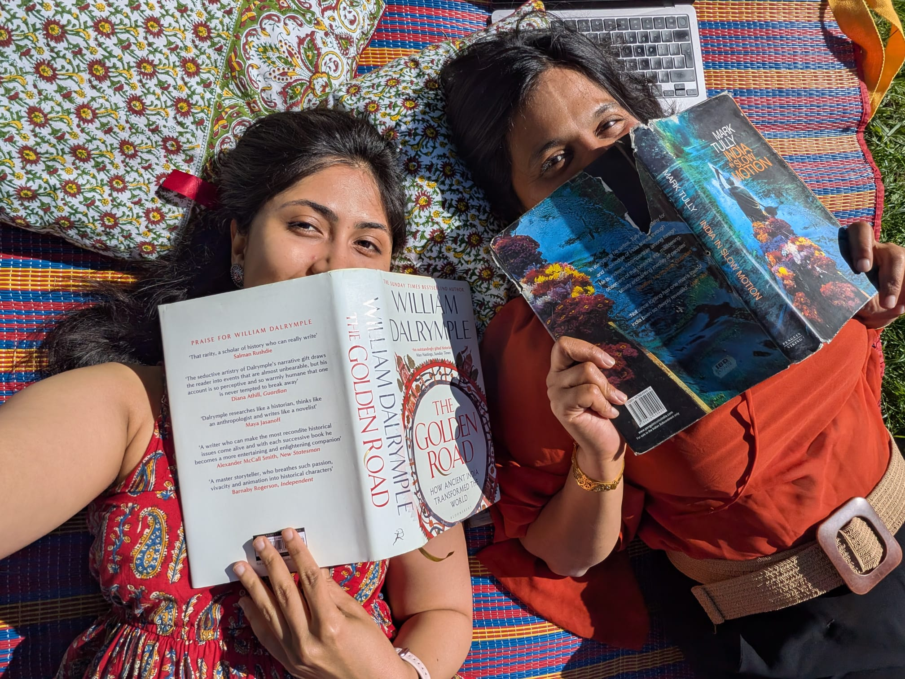

Why Ghar
We started Ghar
to bring intention
home.
We wanted intentional design: good fabric that breathes, is kind to the earth, and carries a story. We wanted to know the people behind our home decor — the name of the maker, the source of the cotton — and to live with statement pieces that connect a home to something slow, mindful, soulful.
Ghar grew from the friendship of two Indian women working together in a Montessori environment in Amsterdam. Montessorians taught us to love the handmade, the sensorial, the unique — and to give every detail our full attention. That thinking shapes each Ghar piece: slow, considered design, made with artisan communities across India.
"Every piece in our collection is made with love and intention. This is not a brand story. It is just what we believe."